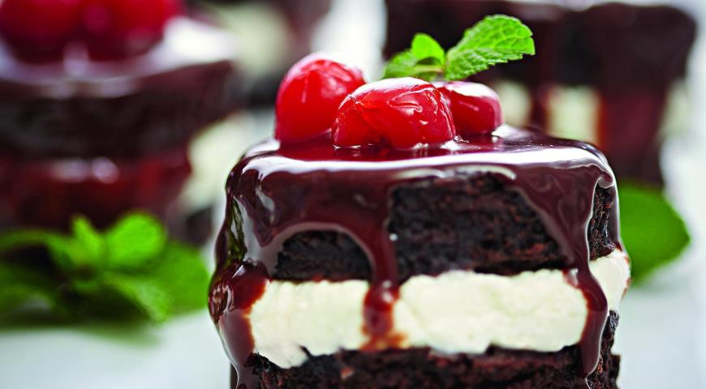
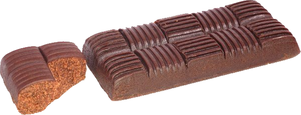

Сахарная голова
Опубликовано 24 апреля 2020 года
Сахар — это сладкое слово. Он используется и в чае, и в кулинарии, и даже является натуральным консервантом. Этот праздник берет только кондитерскую отрасль, предлагая разнообразить свой сладкий рацион в течение этого праздника.
Кратко
- Другие названия: Сахарный день
- Дата празднования: 18 мая
- Место: Россия
- Символ: кубик рафинада
История
Название этого праздника основывается на классической фразе родителей о том, что при переборе сладкого может слипнуться, извините за прямоту. Соответственно "сахарная голова" означает голову, то есть ребенка, а в данном случае еще и взрослого, который от души поел сахара.
Вдаваться в историю сахара не будем, зато расскажем о дате празднования. Впервые Сахарный день был отмечен 18 мая 2004 года. Организаторы первых совместных посиделок и действий в Сахарный день говорят, что такая дата была выбрана неслучайно:
Смотрите: 18 мая записывается как "18.05". Если эти два числа сложить, получится 23. Множим 23 на 2 и получаем 46, а это всего на единицу больше, чем число атомов в молекуле сахарозы, из которой главным образом и состоит сахар.
Так что главные сладкоежки, придумавшие Сахарную голову, еще и любят химию.
Как отмечать?
Смысл праздника в замене всей пищи, то есть мяса, рыбы, овощей и так далее, на сахар, конфеты и пирожные. Отмечать можно одному, с семьей, с друзьями. Пока одни стоматологи хитро потирают руки, другие буквально хватаются за голову от ужаса. В самом деле, с помощью Сахарного дня можно вполне обзавестись проблемами с зубами, однако избежать этого можно, следя за состоянием своей ротовой полости. Ну и, разумеется, можно и нужно запивать, ведь такое количество сладкого не понравится даже самым ярым любителям вкусного.
Другие статьи
|  | На заглавную |
 |
Четверг гематогенаОпубликовано 26 апреля 2020 года |
Неделя костровОпубликовано 5 мая 2020 года |